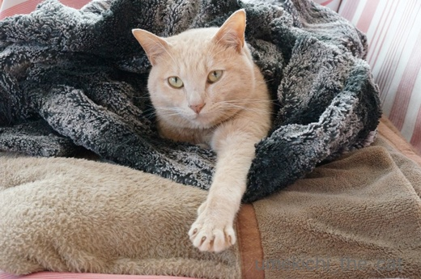
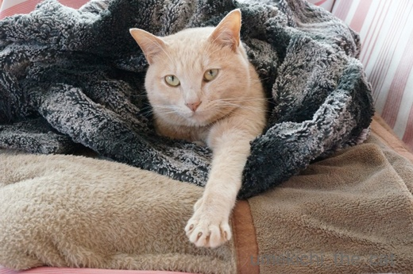

とろける季節がやってきた！ [梅吉]
連休前半は暖かい（暑い）日が続いて半袖で過ごしています。
にゃんこの寝相もでろーんととろけるものに変わってきましたよー。

すごい寝相ですね、梅吉さん。
でろーんとなってもふかふかひざ掛けは手放したくないらしいです(^▽^;)

上半身は膝掛け、下半身はテーブルの冷やっこい感覚を楽しむ技。

妙な寝相ですが熟睡してます。

![[猫]](https://blog.ss-blog.jp/_images_e/101.gif) おひかえなすって
おひかえなすって
カッコつけてもブランケットにくるまっているんじゃ決まりませんよ(*>艸<)
日中はでろーんとしていますが夜になるとブランケットが恋しくなる様子。
ブランケット類、しまいたいのですがタイミングが難しいです。

連日おっとと二度寝を楽しむ連休の朝。
目も口も緩みっぱなしー！！
毎朝寝室から写真が送られてきますwww
 ↑ガブッと一押し↑
↑ガブッと一押し↑
遠出の予定はなく近場で過ごす連休です。
昨日は江戸の戯画をみてきました。
足元のガイドが肉球じるしです＾＾
国芳のにゃんこ物が好きなんですが今回は「金魚づくし」が良かったな。
擬人化された金魚、邪魔な尾びれをたすき掛けしてました(≧▽≦)
一鶯斎芳梅 公式HPから画像をお借りしました。
住吉大社の太鼓橋から転げ落ちる人なんてのもありました。
そうそう！あの橋急で怖いんですよね・・・
敷地内の公園で開催されていた山野草展でマン盆栽に出会いましたよー。
家元のパラダイス山元さんの作品を本でみたのと
おっとのお遊び作品しかみたことがなかったのでちょっと嬉しい＾＾
にゃんこの寝相もでろーんととろけるものに変わってきましたよー。

すごい寝相ですね、梅吉さん。
でろーんとなってもふかふかひざ掛けは手放したくないらしいです(^▽^;)

上半身は膝掛け、下半身はテーブルの冷やっこい感覚を楽しむ技。

妙な寝相ですが熟睡してます。

カッコつけてもブランケットにくるまっているんじゃ決まりませんよ(*>艸<)
日中はでろーんとしていますが夜になるとブランケットが恋しくなる様子。
ブランケット類、しまいたいのですがタイミングが難しいです。

連日おっとと二度寝を楽しむ連休の朝。
目も口も緩みっぱなしー！！
毎朝寝室から写真が送られてきますwww
遠出の予定はなく近場で過ごす連休です。
昨日は江戸の戯画をみてきました。
足元のガイドが肉球じるしです＾＾
国芳のにゃんこ物が好きなんですが今回は「金魚づくし」が良かったな。
擬人化された金魚、邪魔な尾びれをたすき掛けしてました(≧▽≦)
一鶯斎芳梅 公式HPから画像をお借りしました。
住吉大社の太鼓橋から転げ落ちる人なんてのもありました。
そうそう！あの橋急で怖いんですよね・・・
敷地内の公園で開催されていた山野草展でマン盆栽に出会いましたよー。
家元のパラダイス山元さんの作品を本でみたのと
おっとのお遊び作品しかみたことがなかったのでちょっと嬉しい＾＾

カフェオレ色の梅吉

梅吉 2023年8月10日 永眠


梅吉と出会った譲渡会

犬猫の理由なき殺処分ゼロ
妄想広告
UMEKICHI 光

爆発的に早い！
時々攻撃的！
Thanks to Mr.Boss365
爆発的に早い！
時々攻撃的！
Thanks to Mr.Boss365

とろける梅吉さん♪
めちゃくちゃプリティーですねぇ～(#^.^#)
目もお口もゆるみっぱなし（笑
間近で見れるおっとさんは幸せですね！
by きぃ (2018-04-30 15:32)
これ以上ない脱力状態の梅吉さん^^
毎朝添い寝してもらえるおっとさんが羨ましい～。
写真撮るのに忙しくれ眠れないかもしれませんけどね^^;
昼間は暑くても朝夕は冷えたりするし、こてつも寝場所を探してウロウロです。
金魚さん、うちわもって手をつないで楽しそう。
めくれ上がった尻尾の部分が真っ白なオチリみたいてかわいいですね(*^▽^*)
by ゆきち (2018-04-30 15:45)
「ぐでたま」といい勝負が出来ますね(^_^;)
膝掛けとテーブルが、今の中途半端な季節の
感じをよく表してるのかしら(^^) 国芳から
マン盆栽へ、何か通じるものありそう(^_^;)
by middrinn (2018-04-30 17:17)
でろ～んととろける季節、梅吉さんしあわせそう～＾＾
おっとさんも、至福の二度寝でとろけちゃいますね＾＾
国芳の金魚、たすき掛けが良いですね～！
こんなふうになってるんだ‥＾＾
先日、国芳が主人公の小説を読みましたが、面白かったです。
マン盆栽って知りませんでした。
おっとさんはこういうご趣味もあるのですね＾＾
by sana (2018-04-30 18:19)
梅吉さん脱力しきってますねー。テーブルから滴り落ちそう。半分白目も良い感じです。マン盆栽のゴルファーさんそんな深いラフから出すのは無理でしょう。
by zombiekong (2018-04-30 19:41)
ユキは床に直に寝る様になりました。
マン盆栽みたいな苔の盆栽が大好きです(^^)
by riverwalk (2018-04-30 20:06)
梅吉さんは暑さでダラーですね！
半目に口も半分開いていますね(^^)
by ma2ma2 (2018-04-30 20:29)
とろける梅吉さん、とても気持ちよさそうで
見てるだけで癒されますねぇ♪( ´▽｀)
そしてブランケットに包まれながらもキリッとした顔を
見せてくれる梅吉さんも素敵〜( ^ω^ )
by ニッキー (2018-04-30 20:47)
おひかえなすっての梅吉くんとちらキバ白目の梅吉くん。同じ猫とは思えませんよ!!(#^^#)
by palpal (2018-04-30 20:49)
梅吉さん、溶けていますねから（笑）
中々他所ではお目にかかれないような脱力感。
幸せがたっぷりですね。
by kiki (2018-04-30 20:56)
おひかえなすって！
自分の好きな木枯らし紋次郎みたいでかっこいいですよ。
ブランケットも旅人が羽織っている道中合羽みたいで、決まってますよ(^^)
by kou (2018-04-30 21:38)
梅吉さん、思い切りとろけてますねー！
床に少し沁み込んでそう。^^;
江戸の戯画、面白そうですね。
by yes_hama (2018-04-30 21:38)
最後の梅さまのお写真は「流出」って感じですね(^^;
本ニャンにDeleteキー押されそう〜。
住吉大社の橋！今は朱いものですね！
つかまっていても転がり落ちそうで怖かったです(-_-;)
by も〜 (2018-04-30 23:26)
早くもたれてますね〜（笑）
しかし、暑いのか、寒いのか、どっち！？
宇宙との交信姿もサマになっておりますですよ。
by Ja-Kou66 (2018-05-01 00:24)
梅吉さんは表情が豊かで飽きませんねぇ＾＾
by ぽちの輔 (2018-05-01 06:30)
あられもない姿でとろけてるー^^
この寝顔を見てると、ほんっとイジりたくなるわｗｗ
おひかえなすって、決まってますね！
ブランケット類、うちは昨日片付けました。
でもあおがフミフミするカシミヤのストールは、通年ソファーに出ております(笑)
by リュカ (2018-05-01 10:28)
あれまー。
梅吉さんったら、とろっとろ(^.^)
とろけるチーズ？みたいになってますよー♪
暖かくなっても、どこかフワフワには触れてたいんでしょうね。
そして、反則級のステキ寝顔……。
笑いが堪えられない（梅吉さん、すまぬｗ）
国芳さんの金魚画、大・大・大好きです～。
猫をおちょくってたり、尻ばしょりしてたり、ユーモアの垂れ流し。
そういえば、梅吉さんのステキ寝顔って、国芳さん風ですねっ（←めっちゃ、褒め言葉ですぅ～）
by morichan (2018-05-01 12:08)
先生！これでもかというほど、
とろけてますね！^ ^
お元気ですか？
by KENT0mg (2018-05-02 20:00)
最後のお写真の梅吉さん、とろけ具合が
最高ですね～♡
あ～元気、出てきました＾＾
あかりも最近、どこでも転がるようになりました～。
季節が進んでるんですね＾＾
by マーヤ (2018-05-02 21:56)
猫がビロ～ンと伸びる季節になりましたね。
苔のゴルフはラフ以上？（笑）
by 響 (2018-05-03 10:01)
梅吉さん超ゆる姿カワイ~♪
盆栽はかなりファ~の感じだけど
よくみるとなぜかピン旗持ってる人もいた。
by ふにゃいの (2018-05-03 10:37)
ひょえー。めっちゃとろけきってますなぁ(^｡^)
連休後半戦、今から関西へ向け移動中。
今夜は天王寺でプチ同窓会です（≧∇≦）
by よーちゃん (2018-05-03 13:42)
家族がお家にいてくれる日の朝は幸せだよね。
梅吉くんのとろけっぷり。美味しそうでぺろりんしたいですよ～(≧▽≦)
家の子たちも体が伸びてくるにしたがって、「落ちちゃうんじゃない？」な寝姿を披露してくれることが増えてきました。
江戸の戯画。肉球のガイドが可愛らしいです。
私の部屋からトイレまで貼りたい～。そこしか行かんのか！！ｗ
by emi (2018-05-03 15:37)
きぃさん＞
こんな緩みきった顔を間近で見られるのは
飼い主だけの特権ですねー＾＾
この寝顔にさらに「ぷぷぷ〜」と寝息が付くんですよ(*>艸<)
ゆきちさん＞
梅吉がおっとのお布団に行くのは私が寝室にいない時のみ。
梅吉の短い時間の添い寝に嬉しくてずっと起きているようです(*>艸<)
ブランケットはちゅーちゅー用を残してやっと仕舞いました。
そうなるとお膝に乗って来る機会もめっきり減って・・・
お膝三昧は寒い季節がやって来るまでお預けです(꒦ິ⌑꒦ີ)
middrinnさん＞
梅吉の寝姿は緊張感も野性のかけらもありません(^▽^;)
幸せな家ねこなんだなーと見ていて嬉しくなりますけどw
国芳とマン盆栽、どちらもシャレの効いたお遊び精神が
良いですよね(^_－)☆
そうそう！錯綜するあしたのジョーの私の記憶・・・(-_-メ)
でもがんばれ元気のアニメは確かにありました！
妄想じゃないからー(*>艸<)
主題曲も歌えますよ！「
♪げんき げんきー 風になれげんきーー！！♫(≧▽≦)
sanaさん＞
国芳が主人公の小説、面白そうですねー＾＾
私は先日杉浦日向子さんの「百日紅」を読みましたよ。
最近あの時代のものにハマっています。
マン盆栽は、もともと盆栽趣味の派生というところでしょうか。
ドイツ、プライザー社のジオラマ用フィギュアが
マン盆栽にぴったりで(*>艸<)
バリエーションが豊富なフィギュアなので見ているだけで楽しくなりますよ＾＾
zomibekongさん＞
寝返りを打ったら落ちそうだったので
写真を撮った後クッションで壁を作っておきました。
下僕ですからっ(｀_´)ゞ
マン盆栽ゴルフは深すぎるラフでのプレーだったようです(*>艸<)
ピン旗立ってますけどこんなんじゃカップイン出来ませんよねーwww
riverwalkさん＞
ユキちゃんは毛皮がご立派なので
余計にひんやり感覚が気持ち良いのでしょうねー。
苔の盆栽、管理がとーーーーっても大変です。
毎年夏場にダメにしちゃいます(-_-メ)
ma2ma2さん＞
目も口も全部開けないところがポイントです(*>艸<)
私は全白目が好きなんですが・・・なかなかお目にかかれませんw
ニッキーさん＞
きゅっと丸くなって寝ているのも可愛いですが
とろけているのは可愛い＆癒し効果抜群ですよね＾＾
ついついあちこちを触ってみたくなります(*>艸<)
梅吉はカメラを向けるとキメ顔をする時があるんですよね・・・
これは本にゃんのキメ顔のようですよw
palpalさん＞
梅吉、千の顔を持つ男！なんつって〜(*>艸<)
今年はどんな白目顔を見せてくれるか楽しみですよ＾＾
kikiさん＞
こんなに脱力するのは家ネコならではですよねー。
それにしても緊張感が無さすぎです(^▽^;)
外猫さんと同じく無防備にしていたら
（主に私に）襲われるのに！！
私は襲うチャンスがたくさんあってうれしいのですけど(*>艸<)
kouさん＞
木枯らし紋次郎！
再放送のドラマを見るのが小学生の時の帰宅後の楽しみでした＾＾
中村敦夫さんカッコよかったですよね〜。
ながーい楊枝をプリッツなんかで代用して真似してました(*>艸<)
yes_hamaさん＞
この先暑くなる一方なのに今からこのとろけっぷり(^▽^;)
梅吉が寝た後がシミになって残りそうですwww
江戸の戯画、鳥羽絵と言われる当時の漫画を集めたものだったので
シャレの効いたものばかりで楽しかったです。
絵の中のあちこちに仕掛けがあったりして＾＾
もっとじっくり見られたらたくさんの発見がありそうでした。
by ちぃ (2018-05-04 08:08)
も〜さん＞
いえいえ、梅吉は大阪の子。
笑われてなんぼなので密かに「やった！」って
思っているかもしれません(*>艸<)
住吉大社の太鼓橋、初詣、例大祭の時は
あの橋を列をなして人が渡るのですよ・・・
一人がコケたらドミノ倒し！
私は避けるようにしています(^▽^;)
Ja-Kou66さん＞
たれるの早すぎますよねー(^▽^;)
本にゃんも今年の寒暖の差には
気持ちも体も追いついていないのかもしれませんw
宇宙との交信は大得意。
そのうち我が家のベランダで未知との遭遇みたいなことが
起こるかもしれません（古っ！）
ぽちの輔さん＞
梅吉は千の顔を持つ男なのかもしれません！
いえ、すべてのシャッターチャンスを捉えていたならば
万の顔を持つ男、かも(*>艸<)
リュカさん＞
こんな寝相していたらあおくんに襲われそうw
ってウチでは私に襲われるんですよ！(*>艸<)
お腹に顔を埋めてふんがふんが嗅いじゃいましたwww
こういう時は無抵抗なのだ！！
私もやっとブランケット類片付けました。
同じくうちもちゅうちゅうタオルは出しっ放し。
夏場のちゅうちゅうおつきあいは暑くて結構辛いです (^▽^;)
morichanさん＞
暑くてもふわふわ食感は別腹のようでして・・・(^▽^;)
梅吉がちゅうちゅうするブランケットは年中無休なのですが
真夏は梅吉は良くてもお付き合いする下僕が結構キツイですw
梅吉は国芳のにゃんこ顔風！
私が国芳びいきなのはそれなのですよーーー！！！
ちょっと妖猫っぽい表情がそっくりなのです♡
金魚シリーズ、ヤマタノオロチがうなぎだったのがツボでした。
突然降り出すアメンボも良かったです＾＾
KENT0mgさん＞
季節の変わり目ですが先生はお元気ですよー＾＾
それはもう元気すぎるほどで・・・
とろけるもの元気な証拠です(^_－)☆
by ちぃ (2018-05-04 19:17)
マーヤさん＞
梅吉の緩みっぱなしの顔で元気になっていただけるとは！
マーヤさんもマニアですねー(*>艸<)
梅吉のこんな顔を見ていると
「ありのまま」で良いんだなぁと思えますが
私がこんなありのままの顔をしていたら
危険人物として通報されそうですw
あかりちゃんが開きになるのも時間の問題かしら〜(*>艸<)
響さん＞
苔のゴルフは絶対にボールは出ませんよね。
無限ループ？山頂に岩を運ぶ的な？？
哲学的思考すら感じましたw
ふにゃいのさん＞
ピン旗持たれてもカップは見えませんよねー(*>艸<)
旗持っている人もテキトーな気がしますwww
この先、梅吉の腑抜けた姿が毎日のように見受けられそうです＾＾
よーちゃん＞
天王寺でプチ同窓会！
美味しいもの食べましたかー？飲みましたかーー？？
昨夜は予報に反して（大阪市内は）あまり悪天候にならずに
良かったです(≧▽≦)
emiさん＞
一緒に二度寝をしてくれる時もあれば
ご飯を食べたらさっさと引きこもってしまう時もあり・・・
お休みの日もお猫様らしくマイペースな梅吉ですw
美味しそうな梅吉は私がお腹をふんがふんがと嗅いで
堪能いたしました(*>艸<)
肉球ガイドは光るタイプにして寝室からトイレがいいな♡
光ってたら梅吉を蹴飛ばしたりしなくて済みそうだし(^▽^;)
by ちぃ (2018-05-04 20:15)